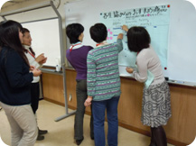

- 【日時】
- 11月25日(木)10:30～14：00
- 【場所】
- さいたまコープコーププラザ大宮3階会議室
- 【出席者】
- 41人(さいたまコープ、さいたま高齢協、住宅生協、医療生協、ドゥコープ、勤労者生協、生活クラブ、事務局)
■テーマ「地域でつながろう、組合員の私たちにできることを交流しましょう。」
- 会長あいさつ
他生協の福祉の取り組みを聞き、｢知る｣という事からまず始めましょう
- 生活クラブ生活協同組合の取り組みについて
エッコロ制度(お互い様の助けあい)、ワーカーズ運動(｢働き方｣を実現)等目指している事、実践している事を報告。
- 各生協の取り組み
さいたま高齢協・医療生協・住宅生協・勤労者生協・さいたまコープ ・ドゥコープ
- 昼食・・・そめや共同作業所
主に身体に障害がある方たちが働いています。障害のある人たちの権利、民主的な運営を大切にしています。

- 生協お奨め商品紹介
紅茶・チョコとバナナのバームクーヘン・キャラメル＆ホワイトチョコ・のど飴・国産米のソフトせんべい
- グループ交流の発表
- 他生協の組合員体験をしたい。
- 在宅での終末を考えさせられました。
- 高専賃はいろいろな生協が関わればもっと良くなるのでは。
- ネットワーク作りの大切さを感じました。
|